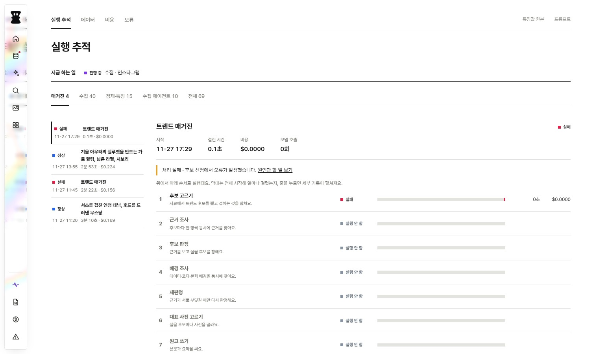
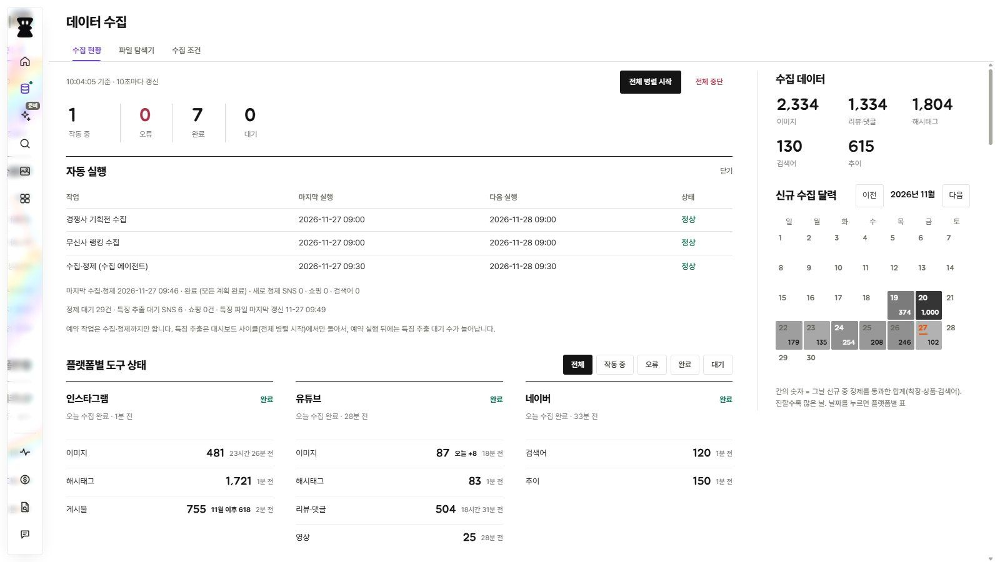
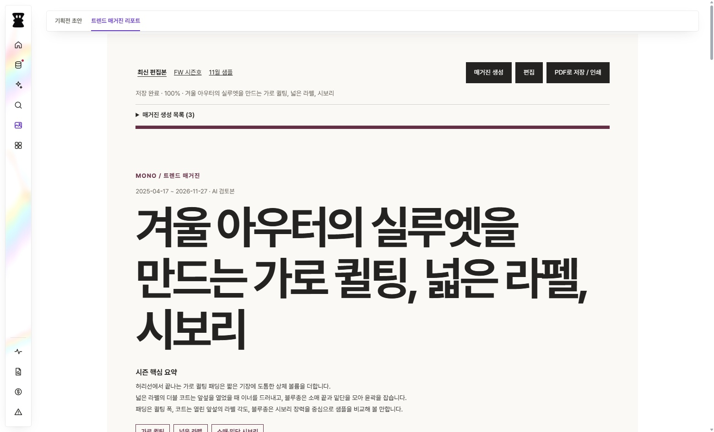
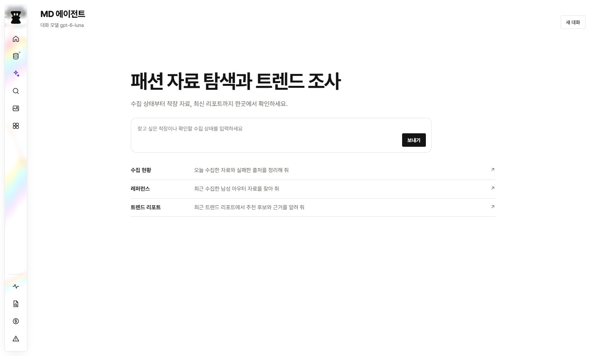

실제 화면을 바탕으로 만든 읽기 전용 데모
MoNO
소셜 착장 자료 수집부터 트렌드 매거진까지
SNS와 무신사 스냅에서 착장 정보를 모아 이전 기간과 비교합니다. 개발자 화면에서는 실행이 멈춘 단계와 원인을 확인하고, MD는 조사 결과를 매거진에서 읽습니다.
개발자 대시보드
실패한 매거진 작업을 선택해 후보 선정에서 실행이 멈춘 것을 확인한 사례입니다. 같은 화면에서 실행 시간, 비용, 모델 호출 수와 단계별 기록을 확인합니다.

데이터 수집 대시보드
예약 실행, 출처별 수집 상태, 신규 수집 달력을 확인합니다. 2026년 11월 27일 오전 기준, 6개 출처에서 정제 통과 자료 2,768건을 집계했습니다.

트렌드 매거진
원본 착장 사진과 특징 데이터를 검토해 가로 퀼팅, 넓은 라펠, 시보리 등 겨울 아우터의 특징을 조사한 편집본입니다. 운영 화면에서 생성·편집·PDF 저장을 지원합니다.
착장 빈도와 검색 추이는 관심의 단서입니다. 구매 수요는 별도의 판매 데이터로 확인해야 합니다.

MD 에이전트
수집 현황, 착장 레퍼런스, 트렌드 리포트 조회로 대화를 시작합니다. 예시를 선택하면 질문을 확인하고 수정한 뒤 보낼 수 있습니다.
기획전 초안 에이전트(CRA)는 설계 단계이며 구현 예정입니다.
